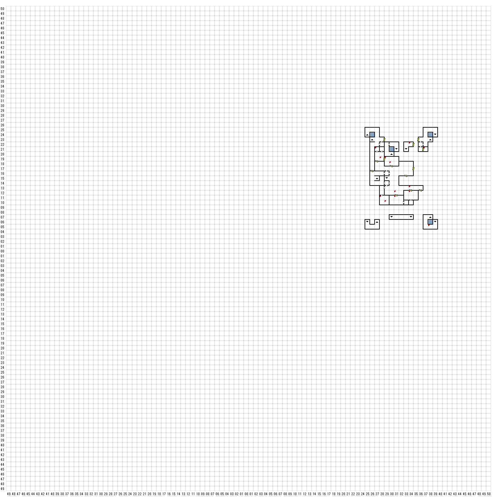

【 東：27，北：21 】
東の壁にボタン
宝箱
大きな鞄の中に入っていたのは、少しばかり衝撃的な
・・・まぁ、一種の鎧というかなんというか・・・
そんな代物であった。すなわち、それは
黒い革製で、金属の鋲で縁取られた、
ごつい作りのブラジャーだったのである。
その使い途がどのようなものであったのか、
はっきりとわかるわけではないが、
もしそれがふさわしい人物に着用されたならば、
ある種の・・・その・・・つまり、まぁなんといううか、
魅力を醸し出す”可能性”があるようであった。
さらにもっと困ったことに、その奇妙な
ブラジャーと一緒に、箱の奥から黒いムチが
出てきた。さてさて、期先の小部屋で、いったい
こんなものを難に使っていたのだろう？
STUD-CUIR BRA＋２
BULLWHIP
【 東：28，北：19 】
明るく彩られた壁は、昔はこの小さな私室を
特徴づけていたことであろう。
今はさすがに往時のつやは消え失せていたが、
それでも明るく陽気な様子は失われていなかった；。
【 東：28，北：11 】
部屋の中央には、古い木のテーブルと
いくつかの椅子の残骸が積み重なっていた。
そして、壊れた酒瓶の破片が
床一面に散乱していた。
【 東：29，北：19 】
KNOCKKNOCK 24で開けた
【 東：29，北：10 】
探す
奇妙な黒いかぎが二つ付いている鍵輪が
みつかった。その鍵の握りの部分は、
小さなスペードの形をしていた。
2 KEYofSPADES
【 東：30，北：18 】
そ部屋の壁は、天使やバラやつる草の
雪花石膏彫刻で飾られ、
歳月を経て石膏がどす黒くなっている
にもかかわらず、その装飾の見事な細工は
観る者に畏敬の念を抱かせた。
大の男三人が横になっても
まだ余裕がありそうな大きなベッドの残骸が
床に崩れ落ちており、部屋中に
もとは家具であった朽ちた木材が
散乱していた。
当然のことながら、この部屋は
妃の寝室だったのであろう。
妃が若い男たちと奇妙な儀式を行っていた
という噂があったが、この部屋を見る限りでは
それは本当のこととは思えなかった。
【 東：31，北：12 】
KNOCKKNOCK 24で開けた
【 東：31，北：11 】
この印象的な外観を持つ都築部屋は、
一種の客間だったようである。
少なくとも、ドアにかかっている
小さな掲示を読む限りはそう思えた。
チェックアウトは午前10時です
【 東：33，北：15 】
昔は、装飾を施した家具と
華やかな壁がこの客間を
美しく彩っていたことであろう。
しかし今はそれも色あせ
椅子も塵に帰してしまっていた。
【 東：34，北：22 】
冷たい空気が門の柵の間を通り抜けてきた。
その風は門の向こう側から城の中に
吹き込んでいるようだった。
遠くの方からなにかの鳴き声が
聞こえてきたようにも思えたが、
もしかするとただの風の音だった
かもしれない。
【 東：34，北：13 】
KNOCKKNOCK 24で開けた
【 東：34，北：12 】
ここはとりたててどうということはない部屋で、
壁にもなにもなく、いくつかの壊れた寝台が
残っているだけであった。
【 東：36，北：12 】
腐った小さな寝台いくつかとさびた花瓶が一つ、
この簡素な小部屋に残っているのは
ただそれだけであった。
その部屋を見ていると
王の隠し子と噂される子供に与えられた
奴隷娘の話が思い出されてきた。
確たる証拠がある話ではなかったが、
王は彼女が14才の年、週に一度は
彼女の床を訪れたという。
過酷なまでの追及のかいもなく、
妃はその現場を捕らえることはできなかった。
そして次第に、王は壁をすり抜けることができる
魔法の力を持っているといううわさが広がった、
と言われている。
【 東：37，北：21 】
腐った木のカゴの残骸が
床に山をなしていた。その中には
何が入っていたにせよ、すべては
塵になってしまっていた。
【 東：38，北：5 】
目の前の角を曲がった向こう側から、
なにかがぶつかったような音が聞こえる・・・